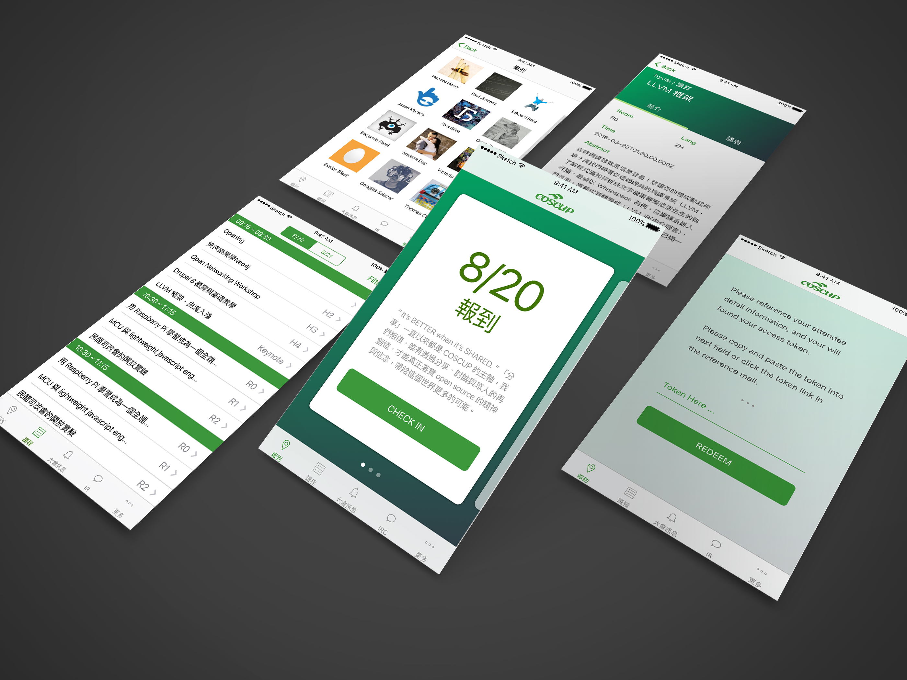

COSCUP, a seminar held in Taiwan with more than a thousand of participant, COSCUP Pass is a new attempt by the CPRTeam at this year's COSCUP when only 30 minutes of registration time is available, which means an average of 40 participant finish check-in per minute.

PROBLEMS
- 一個月內完成 iOS 與 Android 開發
- 30 分鐘內完成 1800 位會眾的驗證與通關
- 提高議程表的查詢流暢度及使用率
- 大會與各會眾間的資訊確實傳遞
- IRC的使用
- 會眾須於大會前一天理解如何使用 APP
MY ROLES
IA, GUI, PrototypeDOWNLOAD

Image via COSCUP Flickr